측량및지형공간정보기사 (2016-10-01 기출문제)
1과목: 측지학 및 위성측위시스템
1. GNSS 신호 관측 시 발생하는 대류층 지연과 관련된 대기의 요소가 아닌 것은?
- 온도
- 색조
- 습도
- 압력
(정답률: 81%)

2. 다음 중 투영에 대한 설명으로 틀린 것은?
- 우리나라의 평면직교좌표계는 TM투영법을 사용한다.
- 등각투영에서는 대상체들의 면적은 일정하나 모양은 변화가 생긴다.
- 원뿔투영은 지구 회전타원체를 원뿔의 표면에 투영한 후 이를 절개하여 평면으로 사용하는 투영이다.
- TM투영은 표준형 메르카토르 투영에서 지구를 90° 회전시켜 중앙자오선이 원기둥면에 접하도록 하는 투영이다.
(정답률: 56%)
3. 구면삼각형의 면적을 5210km2, 지구 반지름을 6370km라고 할 때 구과량은?
- 7″
- 16″
- 23″
- 26″
(정답률: 69%)
4. 다음 GNSS 고정밀 측위에서 사용하는 차분(differencing) 기법에 대한 설명으로 옳지 않은 것은?
- 단순차분은 두 개의 서로 다른 수신기에서 하나의 위성을 동시에 관측할 때 두 개의 수신기에서 수신되는 신호의 순간적인 위상을 측정하여 그들의 차를 구하는 것이다.
- 이중차분은 하나의 위성에 대해 단순차분을 수행하고 동시에 또 다른 위성에 대하여 똑같은 단순차분을 시행한 후 두 방정식의 대수적 차에 의하여 결정하는 방법이다.
- 이중차분은 미확정 정수를 제거함으로써 사이클 슬립의 문제점을 해결할 수 있다.
- 삼중차분은 수신기, 위성, 시간이 모두 계산의 주체가 되며, 이중차분을 두 번의 연속된 시간에 대해 두 번 시행하여 그 차를 구하여 얻는 방법이다.
(정답률: 65%)
5. GNSS 활용 분야로 가장 거리가 먼 것은?
- 수심해저 지형도 판독 기기로 활용
- 차량용 내비게이션 시스템에 활용
- 등산, 캠핑 등의 여가선용에 활용
- 유도무기, 정밀폭격, 정찰 등 군사용으로 활용
(정답률: 71%)
6. 다음 중 지자기 보정과 관계없는 것은?
- 위도보정
- 온도보정
- 기준점보정
- 부게보정
(정답률: 62%)
7. GPS 위성으로부터 전송되는 L1 신호의 주파수는 1575.42MHz일 때 L1 신호 10000파장의 거리는? (단, 광속 c=299792458m/s)
- 1320.17m
- 1902.94m
- 3254.00m
- 20257.67m
(정답률: 68%)
8. 천구 상에서 천정과 동점 및 서점을 잇는 대원으로 자오선과 직각으로 교차하는 교선은?
- 항정선(loxodrome)
- 측지선(geodesic line)
- 묘유선(prime vertical)
- 평행선(parallel lines)
(정답률: 65%)
9. 지구의 기하학적 형상에 관한 설명으로 옳지 않은 것은?
- 지구는 자전에 의해 극지방이 편평한 회전타원체를 이루고 있다.
- 지구곡면 상의 두 점을 지나는 최단거리 곡선을 자오선이라 한다.
- 지구 중심을 통하여 지축에 직교하는 평면을 적도면이라 한다.
- 자오선의 타원 방정식은
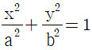
로 표시할 수 있다. (a=장반경, b=단반경)
(정답률: 65%)
10. 우리나라에서 해안선을 결정하기 위하여 채택하고 있는 기준면은?
- 평균해수면
- 약최고고조면
- 약최저저조면
- 지오이드면
(정답률: 70%)
11. 중력값이 지구상의 지점에 따라 차이가 나는 원인이나 현상에 대한 설명으로 옳지 않은 것은?
- 위도에 따라 원심력이 다르다.
- 위도에 따라 중력의 크기가 다르다.
- 높은 산 위의 관측점에서는 중력이 크다.
- 관측점 지하의 밀도가 크면 중력이 크다.
(정답률: 69%)
12. 지리학적 경위도, 높이 및 중력측정 등 3차원의 기준으로 사용하기 위하여 설치된 국가기준점은?
- 통합기준점
- 위성기준점
- 삼각점
- 수준점
(정답률: 84%)
13. GNSS 위성전파가 장해물 등으로 인해 차단되거나 일순간 신호가 단절되어 위상측정이 중단되는 현상은?
- SA(selective availability)
- AS(anti-spoofing)
- 사이클 슬립(cycle slip)
- 멀티패스(multipath)
(정답률: 79%)
14. 지구의 질량을 계산하기 위하여 지구의 반지름, 중력가속도 외에 필요한 요소는? (단, 지구는 자전하지 않는 완전구체로 가정)
- 지구의 부피
- 지구 원심력의 크기
- 만유인력 상수
- 지구 자전 각속도
(정답률: 77%)
15. 지자기에 관한 설명으로 옳지 않은 것은?
- 영년변화는 수백 년을 주기로 나타나는 지자기의 변화이다.
- 지자기변화에는 주기적 변화와 불규칙 변화가 있다.
- 자기 폭풍은 단파 통신의 지장을 초래한다.
- 자기 폭풍의 주요 원인은 지진이다.
(정답률: 82%)
16. GNSS의 구성요소가 아닌 것은?
- 우주 부문
- 제어 부문
- 사용자 부문
- 대기 부문
(정답률: 72%)
17. GPS 신호해석을 통해 직접적으로 획득할 수 없는 성과는?
- 지오이드고
- 타원체고
- 경도
- 위도
(정답률: 67%)
18. RINEX 파일에 대한 설명으로 틀린 것은?
- RINEX는 GNSS 수신기 기종에 따라 기록방식이 달라 이를 통일하기 위해 만든 표준파일형식이다.
- 헤더부분에는 관측점명, 안테나높이, 관측날짜, 수신기명 등 파일에 대한 정보가 들어간다.
- RINEX 파일로 변환하였을 경우 자료처리의 신뢰도를 높이기 위해 사용자가 편집할 수 없도록 되어 있다.
- 의사거리와 반송파 관측데이터 모두 기록한다.
(정답률: 85%)
19. 지구의 적도 반지름이 6377km, 극반지름이 6356km일 때 타원체의 편평률은?
- 0.003
- 0.018
- 0.033
- 0.081
(정답률: 69%)
20. GNSS단독측위에서의 정확도에 대한 설명으로 틀린 것은?
- 대류권의 수증기 양이 적을수록 정확도가 높다.
- 전리층의 전하량이 적을수록 정확도가 높다.
- 위성의 궤도가 정확할수록 정확도가 높다.
- 위성의 배치가 천정방향에서 집중될수록 정확도가 높다.
(정답률: 80%)
2과목: 응용측량
21. 클로소이드의 성질에 대한 설명으로 틀린 것은?
- 클로소이드는 나선의 일종이다.
- 모든 클로소이드는 닮은꼴이다.
- 모든 클로소이드의 요소는 길이의 단위를 갖는다.
- 어떤 점에 관한 클로소이드 요소 중 두 개가 정해지면 클로소이드의 크기와 위치가 결정되며 다른 요소들도 구할 수 있다.
(정답률: 57%)
22. 세 꼭지점의 평면좌표가 표와 같은 삼각형의 면적을 3:2로 분할하는 점 M의 좌표는?
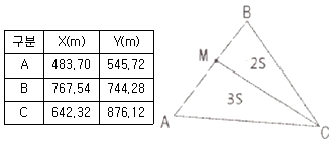
- X=597.24m, Y=625.14m
- X=654.00m, Y=664.86m
- X=663.32m, Y=671.30m
- X=703.56m, Y=699.52m
(정답률: 45%)
23. 터널공사를 위하여 그림과 같이 천정에 측점을 설치하고 a=1.75m, b=1.58m, 경사거리 S=35m, α=17°45′ 을 관측하였을 때 A, B 두 점 간의 고저 차는?
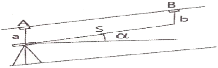
- 10.50m
- 10.67m
- 10.84m
- 13.83m
(정답률: 45%)
24. 노선의 직선부분에 대한 토량을 계산하기 위한 측량결과의 일부이다. 양단면 평균법에 의한 성토부분의 토량은?
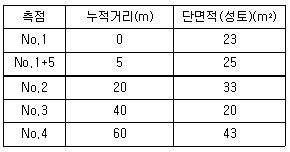
- 1615m3
- 1715m3
- 1860m3
- 1980m3
(정답률: 51%)
25. 클로소이드 곡선의 중심에서 주접선에 내린 수선의 길이와 접속되는 원곡선의 반지름의 차이를 의미하는 것은?
- 이정량(shift)
- 접선편거
- 현편거
- 캔트(cant)
(정답률: 54%)
26. □ABCD를 CO를 통하여 면적을 2등분하기 위한 OD의 길이는? (단, □ABCD=25000m2, CE =100m)
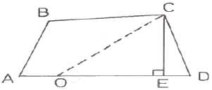
- 200m
- 250m
- 300m
- 350m
(정답률: 54%)
27. 노선의 원곡선 설치에서 접선의 길이가 25m, 교각이 42° 20′일 때 반지름 R은?
- 64.6m
- 64.8m
- 74.6m
- 74.8m
(정답률: 65%)
28. 다음 중 원곡선의 종류에 속하지 않는 것은?
- 단곡선
- 렘니스케이트
- 머리핀곡선
- 반향곡선
(정답률: 54%)
29. 유속측량을 위한 장소 선정의 고려사항에 대한 설명으로 틀린 것은?
- 수위의 변화에 의해 하천횡단면 형상이 급변하지 않고 지질이 양호한 곳
- 관측장소의 상ㆍ하류의 유로가 일정한 단면을 가진 곳
- 직류부에서 흐름이 일정하고, 하상의 요철이 적고 하상경사가 일정한 곳
- 교량 등 인공구조물에 의하여 유속의 감속이 뚜렷하고 퇴적이 활발한 곳
(정답률: 75%)
30. 설계속도 70km/h, 곡선반지름 530m인 곡선을 설계할 때, 필요한 편경사는?
- 5%
- 6%
- 7%
- 8%
(정답률: 43%)
31. 댐의 변위, 변형측량에 대한 설명으로 틀린 것은?
- 사진측량에 의해 수위에 대한 댐의 변위, 변형측량을 할 수 있다.
- 댐에 설치된 표정점의 좌표를 관측하여 댐의 변위, 변형측량을 할 수 있다.
- 측량망 조정방법은 사진측량에 의한 방법보다 관측시간이 적게 소요되므로 순간적인 변위 및 변형에 유용하게 이용된다.
- 순간변형에 대하여 동시관측 및 반복관측을 통하여 변위량을 알 수 있다.
(정답률: 68%)
32. 그림과 같은 횡단면도의 성토 부분의 면적은?
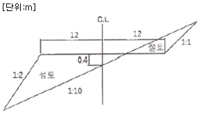
- 10m2
- 16m2
- 18m2
- 24m2
(정답률: 41%)
33. 하천측량의 수위관측에서 양수표에 대한 설명으로 옳지 않은 것은?
- 영(0) 눈금은 최저수위보다 높다.
- 양수표의 최고수위는 최대 홍수위보다 높다.
- 검조장의 평균해면 표고로 측정한다.
- 홍수 뒤에는 부근 수준점과 연결하여 표고를 확인한다.
(정답률: 60%)
34. 하천측량의 수애선(水涯線) 및 수애선 측량에 관한 설명으로 틀린 것은?
- 수애선은 수면과 하안의 경계선이다.
- 수애선은 하천수위의 변화에 따라 변동한다.
- 수애선은 하천의 최저수위에 의해 정해진다.
- 수애선 측량은 동시 관측에 의한 방법이 있다.
(정답률: 65%)
35. 다음 중 경관구성요소에 의한 분류(시점과 대상과의 관계에 의한 분류)에 속하지 않는 것은?
- 대상계(對象系)
- 경관장계(景觀場系)
- 상호성계(相互性系)
- 인공계(人工系)
(정답률: 58%)
36. 수로측량의 기준으로 옳은 것은?
- 교량 및 가공선의 높이는 약최저저조면으로부터의 높이로 표시한다.
- 노출암, 표고 및 지형은 약최고고조면으로부터의 높이로 표시한다.
- 수심은 기본수준면으로부터의 깊이로 표시한다.
- 해안선은 해면이 약최저저조면에 달하였을 때의 육지와 해면의 경계로 표시한다.
(정답률: 42%)
37. 원곡선의 설치에서 장현(L)의 길이를 구하는 공식은? (단, R=곡선의 반지름, I=교각)
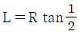
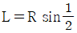
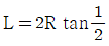
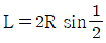
(정답률: 60%)
38. 터널측량에 대한 설명으로 옳지 않은 것은?
- 터널 외 측량, 터널 내 측량, 터널 내외 연결측량으로 구분할 수 있다.
- 터널 내 측량 시 조명이 달린 표척과 레벨이 필요하다.
- 터널 내 중심선 측량 시 다보(dowel)라는 기준점을 설치한다.
- 터널 내의 곡선설치 시 주로 편각현장법을 사용한다.
(정답률: 61%)
39. 도로의 중심선을 따라 20m 간격으로 종단측량을 하여 표와 같은 결과를 얻었다. 측점 No.1의 도로 계획고를 21.50m로 하고 2%의 상향기울기로 도로를 설치할 때, No.5의 절토고는? (단, 지반고의 단위：m)
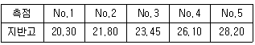
- 4.70m
- 5.10m
- 5.90m
- 6.10m
(정답률: 42%)
40. 터널의 양쪽 입구 A와 B를 연결한 지상골조측량을 하여 A(-2357.26m, -1763.26m), B(-1385.78m, -987.33m) 및 임의점 P에 대한 방위각(AP)=176° 27′ 32″를 얻었을 때 ∠PAB는?
- 38° 36′ 49″
- 137° 50′ 39″
- 151° 16′ 36″
- 215° 04′ 21″
(정답률: 35%)
3과목: 사진측량 및 원격탐사
41. 다음 중 공간을 불규칙한 삼각형으로 분할하여 생성된 공간자료구조의 일종으로 경사와 경사 방향을 설정하고, 효율적으로 지형의 높낮이와 음영을 표현할 수 있는 방법은?
- DEM(Digital Elevation Model)
- DGM(Digital Geographic Model)
- TIN(Triangulation Irregular Network)
- TRN(Triangulation Regular Network)
(정답률: 75%)
42. 평균해수면으로부터의 고도가 2850m인 항공기에서, 초점거리가 153mm의 카메라로, 평균해수면으로부터의 고도 500m인 평지를 촬영했을 때 이 사진의 축척은?
- 1:18627
- 1:15360
- 1:1736
- 1:1536
(정답률: 66%)
43. 입체모델을 구성하는 두 사진의 투영중심과 임의의 지상점, 그리고 지상점에 대한 각 사진의 공액점이 동일 평면상에 존재해야 한다는 조건은?
- 공선조건
- 공면조건
- 수렴조건
- 회전변환조건
(정답률: 67%)
44. 영상분류(image classification)에서 감독분류(supervised classification)기법을 위해 필수적인 사항은?
- 표본영상 자료
- 좌표변환식
- 지상측량 성과
- 수치지도
(정답률: 62%)
45. 촬영고도 6350m, 사진(Ⅰ)의 주점기선길이가 67mm, 사진(Ⅱ)의 주점기선길이가 70mm일 때 시차차가 1.37mm인 댐의 높이는?
- 147m
- 137m
- 127m
- 107m
(정답률: 59%)
46. 초점거리 150mm, 사진의 크기 23cm×23cm인 카메라에 의하여 촬영된 축척 1:15000의 항공사진이 있다. 사진은 촬영고도가 동일한 연직사진이며 촬영기준면의 표고는 0m, 인접 사진과의 중복도가 60%일 때, 높이 30m의 철탑이 주점기선의 중앙에 위치하고 있다면 철탑의 기복변위는?
- 0.21mm
- 0.41mm
- 0.61mm
- 0.82mm
(정답률: 41%)
47. 상호표정의 불완전모형을 설명한 것으로 가장 적합한 것은?
- 입체모형에서 회전인자를 사용할 수 없는 모형
- 입체모형에서 공면조건이 없는 모형
- 입체모형에서 일부가 구름이나 수면으로 가려져 상호표정에 필요한 6점을 이상적으로 배치할 수 없는 모형
- 입체모형에서 평행변위부 수정을 위하여 기계적 방법을 사용하여야 하는 모형
(정답률: 62%)
48. 자동 상호표정을 위하여 영상에서 특징선을 검색하고자 할 때 영상처리기법으로 가장 적절한 방법은?
- 선형스트레치 기법
- 히스토그램 평활화 기법
- 쇼벨(Sobel) 경계선 필터 기법
- 로우패스(Low pass) 필터 기법
(정답률: 49%)
49. 다음의 항공촬영된 사진 중 지평선이 나타나는 사진은?
- 저각도 경사사진
- 수직사진
- 엄밀 수직사진
- 고각도 경사사진
(정답률: 53%)
50. ＜보기＞의 지구관측위성에서 취득되는 팬크로매틱 영상의 공간해상도를 고해상도부터 저해상도 순으로 나열한 것으로 옳은 것은?
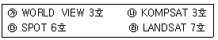
- ㉮-㉯-㉰-㉱
- ㉮-㉯-㉱-㉰
- ㉯-㉮-㉰-㉱
- ㉯-㉰-㉱-㉮
(정답률: 56%)
51. 다음의 ( )에 알맞은 것은?
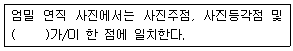
- 사진지표(fiducial mark)
- 사진연직점(nadir point)
- 지상기준점(ground control point)
- 노출중심점(perspective center)
(정답률: 72%)
52. 해석적 절대표정에서 결정되는 것으로 옳은 것은?
- 축척, 수준면, 위치
- 촬영점의 위치, 회전각, 주점
- 초점거리, 렌즈왜곡, 대기보정
- 입체사진의 기선길이, 회전각, 중복도
(정답률: 54%)
53. 항공사진측량의 표정에 관한 설명 중 옳지 않은 것은?
- 기복변위식을 사용하여 상호표정요소를 구할 수 있다.
- 공선조건식을 사용하여 외부표정요소를 구할 수 있다.
- 사진지표(fiducial mark)를 관측하여 내부표정을 수행할 수 있다.
- 지상기준점을 이용하여 외부표정요소를 구할 수 있다.
(정답률: 47%)
54. 항공사진의 기복변위와 관계가 없는 것은?
- 중심투영
- 정사투영
- 지형지물의 비고
- 지형지물의 높이에 비례
(정답률: 62%)
55. 주점과 등각점의 거리가 6.55mm이고, 경사각이 5°, 축척이 1:10000일 경우에 촬영고도는?
- 1500m
- 2000m
- 4000m
- 5000m
(정답률: 45%)
56. 원격탐사(remote sensing)의 자료변화 시스템에 있어서 기하학적 보정을 필요로 하는 경우가 아닌 것은?
- 다른 파장대의 영상을 중합하고자 할 때
- 다른 일시 또는 탐측기(sensor)로 취득한 같은 장소의 영상을 중합하고자 할 때
- 지리적인 위치를 정확히 구하고자 할 때
- 영상의 질을 높이거나 시야각, 구름 등에 대한 영향을 보정할 때
(정답률: 42%)
57. 원격탐사에 대한 설명으로 틀린 것은?
- 사용목적에 따라 적절한 영상을 선택할 필요가 있다.
- 한 번에 넓은 지역의 정보를 취득할 수 있다.
- 지리적으로 접근이 곤란한 지역의 자료 수집에 용이하다.
- 지리적인 속성정보 파악이 현지조사보다 정확하다.
(정답률: 77%)
58. 편위수정(rectification)에 대한 설명으로 옳지 않은 것은?
- 편위수정을 거친 사진을 집성한 사진지도를 조정집성사진지도라 한다.
- 사진기의 경사에 의한 변위 및 지표면의 비고에 의한 기복변위를 수정하는 것이다.
- 수평위치 기준점이 최소한 3점이 필요하고 정밀을 요하는 경우 4점 이상이 소요된다.
- 편위수정기를 이용하는 기계적 편위수정과 수학적 좌표변환을 이용하는 해석적 편위수정이 있다.
(정답률: 24%)
59. 공간 해상력이 상이한 두 종류 이상의 영상을 합성하여 상대적으로 고해상도인 종합 정보를 포함한 영상을 제작하는 과정을 무엇이라고 하는가?
- 영상 강조(image enhancement)
- 영상 분류(image classification)
- 영상 전처리(image preprocessing)
- 영상 융합(image fusion)
(정답률: 70%)
60. 축척 1:20000 항공사진을 180km/h의 속도로 촬영할 경우 사진상 허용 흔들림량을 0.01mm로 한다면 최장 노출시간은?
- 1/200초
- 1/250초
- 1/300초
- 1/500초
(정답률: 60%)
4과목: 지리정보시스템
61. 크기가 다른 삼각형들로 망을 구성하여 지형을 표현하는 모델은?
- TIN
- DTM
- DSM
- DEM
(정답률: 73%)
62. 논리연산(AND)의 처리 후 ㉠~㉣의 결과값을 순서대로 바르게 표시한 것은?
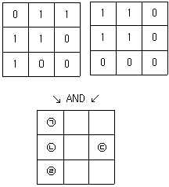
- 1-1-1-0
- 0-1-0-1
- 1-1-0-0
- 0-1-0-0
(정답률: 74%)
63. 내비게이션의 최적경로를 계산하거나 상하수도 관망 등과 같은 선형 개체의 부하 예측을 위해 필요한 지리정보시스템(GIS)의 분석 기법은?
- 버퍼링 분석
- 네트워크 분석
- 공간질의
- 입지 분석
(정답률: 74%)
64. 유사한 특징이 너무 많거나 축척에 따라 표현이 곤란할 정도로 작은 지역에서 면적이나 길이를 비교하여 기준 이하의 공간정보를 삭제하는 일반화 기법은?
- 단선(merging) 처리
- 정리(refinement) 처리
- 과장(exaggeration) 처리
- 단순화(simplification) 처리
(정답률: 36%)
65. 지리정보시스템(GIS)에서 데이터베이스 관리시스템(DBMS)을 사용하는 이유로 옳지 않은 것은?
- DBMS는 대용량의 데이터를 저장하고 관리할 수 있다.
- DBMS는 여러 사용자가 동시에 데이터를 사용할 수 있고 공유할 수 있다.
- DBMS는 강력한 공간분석 기능을 제공한다.
- DBMS는 강력한 질의어를 지원한다.
(정답률: 41%)
66. 벡터 데이터 모델의 특징으로 옳지 않은 것은?
- 공간해상도에 좌우되지 않는다.
- 속성정보의 입력, 검색, 갱신이 용이하다.
- 실세계의 이산적 현상의 표현에 효과적이다.
- 항공영상, 위성영상 등 디지털 자료를 저장할 때 사용한다.
(정답률: 57%)
67. 공간정보를 효과적으로 표현하기 위한 방법으로 복잡한 공간정보를 약속된 형태로 단순화하여 표현하는 방법은?
- 심볼화
- 체계화
- 수치화
- 최소화
(정답률: 62%)
68. 지리정보시스템(GIS)의 자료 특성에 대한 설명으로 틀린 것은?
- 벡터자료는 점, 선, 면 자료구조로 단순화하여 좌표를 통해 실세계의 지형지물을 표현한 자료로 수치지도가 이에 속한다.
- 래스터 자료는 벡터자료에 비하여 상대적으로 부정확한 위치정보를 제공한다.
- 속성정보는 지형지물의 상태나 특성 등을 문자나 숫자형태로 나타낸 자료로 대장, 보고서 등이 이에 속한다.
- 위치정보는 절대위치정보만으로 구성되며 영상이나 점, 선, 면의 형상을 나타내는 자료이다.
(정답률: 61%)
69. 그림은 6×6 화소 크기의 래스터 데이터를 수치적으로 표현한 것이다. 이 데이터를 2×2 화소 크기의 데이터로 영상재배열(resampling)하고자 한다. 2×2 화소 데이터의 수치값을 결정하는 방법으로 중앙값 방법(Median Method)을 사용하고자 할 때 결과로 옳은 것은?
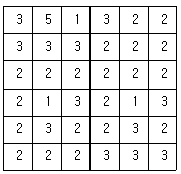
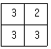
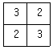
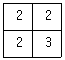
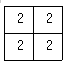
(정답률: 66%)
70. 우리나라에서는 ISO(국제표준화기구)와 연계하여 국가 GIS 표준을 제정하고 있는데 ISO에서 GIS 및 관련 기술의 표준을 담당하고 있는 위원회는?
- ISO/TC 162
- ISO/TC 207
- ISO/TC 211
- ISO/TC 224
(정답률: 62%)
71. 수계 분석을 위하여 수치표고모형(DEM)으로부터 누적흐름도(flow accumulation map)를 작성한 결과 그림과 같다. (a), (b)에 들어갈 숫자로 옳은 것은? (단, 화살표의 방향은 각 격자에서의 흐름방향을 나타냄)
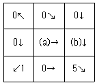
- 0, 3
- 1, 2
- 0, 2
- 1, 3
(정답률: 50%)
72. 지리정보시스템(GIS) 구성요소 중 전체 구축비에서 가장 많은 부분을 차지하는 항목으로 실세계를 컴퓨터상에 구현해 놓은 것이라 할 수 있는 것은?
- 네트워크
- 데이터베이스
- 하드웨어
- 소프트웨어
(정답률: 65%)
73. 레이더 영상에 대한 설명으로 틀린 것은?
- 연직으로 촬영할 경우 좌우 구분이 불가능하여 경사방향으로 촬영한다.
- 레이더를 지표에 발사하여 돌아오는 방사파를 이용하여 2차원 영상을 생성하는 구조이다.
- 파도가 없는 해수면의 경우 반사파가 그대로 돌아오기 때문에 밝게 나타난다
- 입사각에 따른 센서 진행방향의 해상도 문제를 해결하기 위해서 SAR가 도입되었다.
(정답률: 46%)
74. 지리정보시스템(GIS)에서 도로에 대한 데이터베이스를 구축할 때, 도로포장 일자, 포장 종류, 차선수, 보수일자와 같은 정보를 무엇이라 하는가?
- 위상 정보
- 지리적 위치
- 공간적 관계
- 속성 정보
(정답률: 74%)
75. 공간연산방법 중 공간연산 후 연산에 참여한 모든 데이터들이 결과파일에 나타나는 것은?
- Union
- Overlay
- Difference
- Intersection
(정답률: 67%)
76. 규칙적인 셀(cell)의 격자에 의하여 형상을 묘사하는 자료구조는?
- 래스터자료구조
- 벡터자료구조
- 속성자료구조
- 필지자료구조
(정답률: 73%)
77. 다음 중에 지리정보시스템(GIS)의 공간 검색 방법과 사례가 잘못 연결된 것은?
- 인접성 분석 - 1번 국도에 접하는 토지들의 소유자들은 누구인가?
- 포함관계 분석 - 1~3번 필지를 포함하는 도시는 어디인가?
- 연결관계 분석 - 인구가 100만 이상인 도시는 어디에 위치해 있는가?
- 네트워크 분석 - A시와 B시를 연결하는 최적 경로는 무엇인가?
(정답률: 75%)
78. 기존의 도면을 스캐닝하여 얻어진 격자형태의 자료에 대하여 적당한 소프트웨어를 사용하여 입력된 도면의 선을 수동, 반자동 또는 자동방식으로 추적하여 벡터자료를 획득하는 방법은?
- 래스터라이징
- 벡터라이징
- 디지타이징
- 커스터마이징
(정답률: 50%)
79. 지리정보시스템의 일반적인 자료처리단계를 순서대로 바르게 나열한 것은?
- 자료의 수치화 - 응용분석 - 출력 - 자료조작 및 관리
- 자료조작 및 관리 - 자료의 수치화 - 응용분석 - 출력
- 자료조작 및 관리 - 응용분석 - 출력 - 자료의 수치화
- 자료의 수치화 - 자료조작 및 관리 - 응용분석 - 출력
(정답률: 65%)
80. 종이지도를 수치화하기 위하여 왜곡을 보정하고 좌표를 부여하는 것을 무엇이라 하는가?
- 벡터라이징(vectorizing)
- 와핑(warping)
- 디지타이징(digitizing)
- 포지셔닝(positioning)
(정답률: 43%)
5과목: 측량학
81. 등고선의 성질에 대한 설명으로 옳은 것은?
- 등고선은 도면 내에서는 폐합하지만 도면 외에서는 폐합하지 않는다.
- 등고선의 간격이 좁다는 것은 지표의 경사가 완만하다는 것을 뜻한다.
- 등고선은 지표의 최대경사선 방향과 평행하다.
- 등고선은 동굴과 절벽에서는 교차한다.
(정답률: 67%)
82. A, B 두 점 간의 고저 차를 구하기 위하여 그림과 같이 (1), (2), (3) 코스로 수준측량한 결과가 다음과 같을 때 두 점 간의 고저 차에 대한 최확값은?
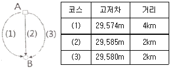
- 29.567m
- 29.569m
- 27.578m
- 29.581m
(정답률: 63%)
83. 평균거리 2km에 대한 삼각측량에서 시준점의 편심에 대한 영향이 11″일 경우에 이에 의한 편심거리는?(16.5회 측량기사)
- 약 0.11m
- 약 0.22m
- 약 0.42m
- 약 0.81m
(정답률: 54%)
84. 다각측량에서 전 측선의 길이가 500m일 때 폐합비를 1/5000로 하기 위한 축척 1:500도면에서의 폐합오차는?
- 0.1mm
- 0.2mm
- 0.4mm
- 0.6mm
(정답률: 48%)
85. A점에서 B점까지 일정한 경사의 도로 상에서 줄자를 이용하여 거리측량을 하였다. 관측값은 398.855m이고 관측 중의 온도가 26℃이었다면 실제 수평거리는? (단, 줄자의 표준온도는 15℃, 줄자의 팽창계수는 +0.000012/℃이다.)
- 398.694m
- 398.731m
- 398.802m
- 398.908m
(정답률: 22%)
86. 오차에 대한 설명으로 틀린 것은?
- 참오차는 관측값과 참값의 차이다.
- 잔차는 최확값과 관측값의 차이다.
- 최확값에 대한 표준편차를 과대오차라 한다.
- 오차의 일반법칙은 우연오차를 대상으로 한다.
(정답률: 46%)
87. 각 관측의 조정조건으로 옳지 않은 것은?
- 평반기포관이 수직축에 수평이어야 한다.
- 망원경의 위치가 회전축에 편심되지 않아야 한다.
- 시준축은 수평축이 직교하여야 한다.
- 수평축은 연직축에 직교하여야 한다.
(정답률: 38%)
88. 아래 그림과 같이 관측된 거리를 최소제곱법으로 조정하기 위한 조건방정식으로 옳은 것은?
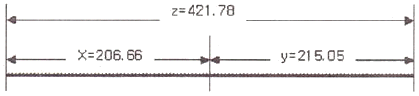
- uz=-ux+uy+0.07
- uz=ux+uy-0.07
- uz=ux-uy+0.07
- uz=-ux-uy-0.07
(정답률: 53%)
89. 지형측량에서 동일방향의 경사면에서 경사의 크기가 다른 두 면의 접선(평면교선)을 무엇이라 하는가?
- 능선
- 계곡선
- 경사변환선
- 최대경사선
(정답률: 63%)
90.
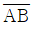
의 방위각과 관측각이 표와 같을 때, 그림에서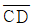
측선의 방위각은?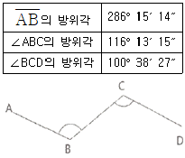
- 121° 50′ 02″
- 143° 06′ 56″
- 270° 40′ 26″
- 301° 50′ 02″
(정답률: 40%)
91. 지형측량의 결과인 등고선도의 이용과 가장 거리가 먼 것은?
- 지적도의 작성
- 노선의 도상선정
- 성토, 절토의 범위 결정
- 집수면적의 측정
(정답률: 57%)
92. B, C, D점에서 그림과 같이 ①~④의 각을 관측하였다. BC의 거리가 120.00m일 때, CD의 거리는?
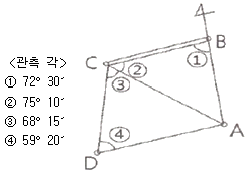
- 197.1m
- 198.3m
- 202.4m
- 215.3m
(정답률: 45%)
93. 거리를 측정할 때에 발생하는 오차 중에서 정오차가 아닌 것은?
- 표준온도와 관측 시 온도 차에 의해 발생하는 오차
- 표준줄자와의 길이 차이에 의하여 발생하는 오차
- 눈금을 잘못 읽었을 때 발생하는 오차
- 줄자의 처짐(sag)으로 발생하는 오차
(정답률: 68%)
94. 수준측량의 오차 중 정오차가 아닌 것은?
- 표척눈금이 정확하지 않을 때 오차
- 표척의 영눈금 오차
- 시차에 의한 오차
- 시준선 오차
(정답률: 41%)
95. 아래와 같이 정의되는 용어로 옳은 것은?
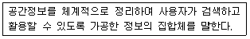
- 공간정보체계
- 공간객체등록
- 공간정보데이터베이스
- 국가공간정보통합체계
(정답률: 53%)
96. 측량기본계획에 포함되어야 하는 사항이 아닌 것은?
- 측량 산업 및 기술인력 육성방안
- 측량에 관한 기본 구상 및 추진 전략
- 측량의 국내외 환경 분석 및 기술연구
- 측량기술의 향상 및 기본측량의 추진계획
(정답률: 38%)
97. 국토교통부장관은 특정 목적을 위하여 필요하다고 인정되는 경우에 일반측량을 한 자에게 측량성과 및 측량기록의 사본 제출을 요구할 수 있다. 다음 중 그 목적에 해당되지 않는 것은?
- 측량의 중복 배제
- 측량성과 심사의 편의
- 측량의 정확도 확보
- 측량에 관한 자료의 수집 및 분석
(정답률: 60%)
98. 공간정보의 구축 및 관리 등에 관한 법률에 따른 용어의 정의로 옳은 것은?
- 기본측량이란 모든 측량의 기초가 되는 공간정보를 제공하기 위하여 국토교통부장관이 실시하는 측량을 말한다.
- 측량성과란 특정성과를 얻을 때까지의 측량에 관한 작업의 기록을 말한다.
- 측량업자라 함은 공간정보의 구축 및 관리 등에 관한 법률이 정하는 바에 따라 관련 업종에 종사하는 자를 말한다.
- 측량기록이란 측량을 통하여 얻은 최종 결과 보고서를 말한다.
(정답률: 54%)
99. 국토교통부장관의 허가 없이 기본측량성과 중 지도나 그 밖에 필요한 간행물 또는 측량용 사진을 국외로 반출할 수 있는 경우에 해당되지 않는 것은?
- 대한민국 정부와 외국 정부 간에 체결된 협정 또는 합의에 따라 기본측량성과를 상호 교환하는 경우
- 정부를 대표하여 외국 정부와 교섭하거나 국제회의 또는 국제기구에 참석하는 자가 자료로 사용하기 위하여 반출하는 경우
- 관광객 유치와 관광시설 홍보를 목적으로 제작하여 반출하는 경우
- 축척 5천분의 1 이상의 대축척 지도를 국외로 반출하는 경우
(정답률: 73%)
100. 300만원 이하의 과태료 부과 대상이 아닌 것은?
- 정당한 사유 없이 측량을 방해한 자
- 측량기술자가 아님에도 불구하고 측량을 한 자
- 측량업 등록사항의 변경신고를 하지 아니한 자
- 거짓으로 측량기술자의 신고를 한 자
(정답률: 41%)